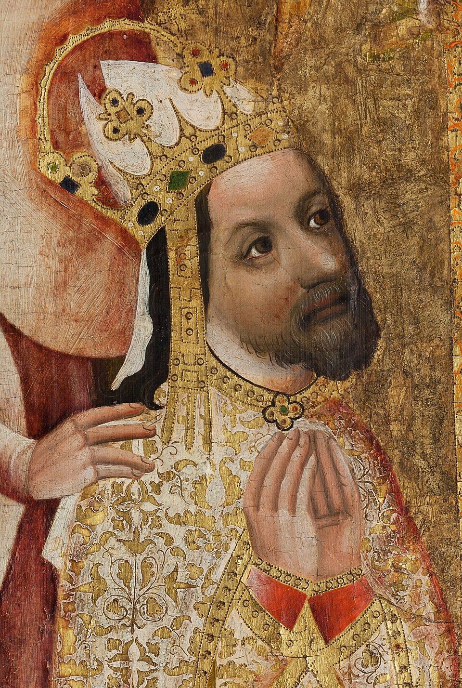
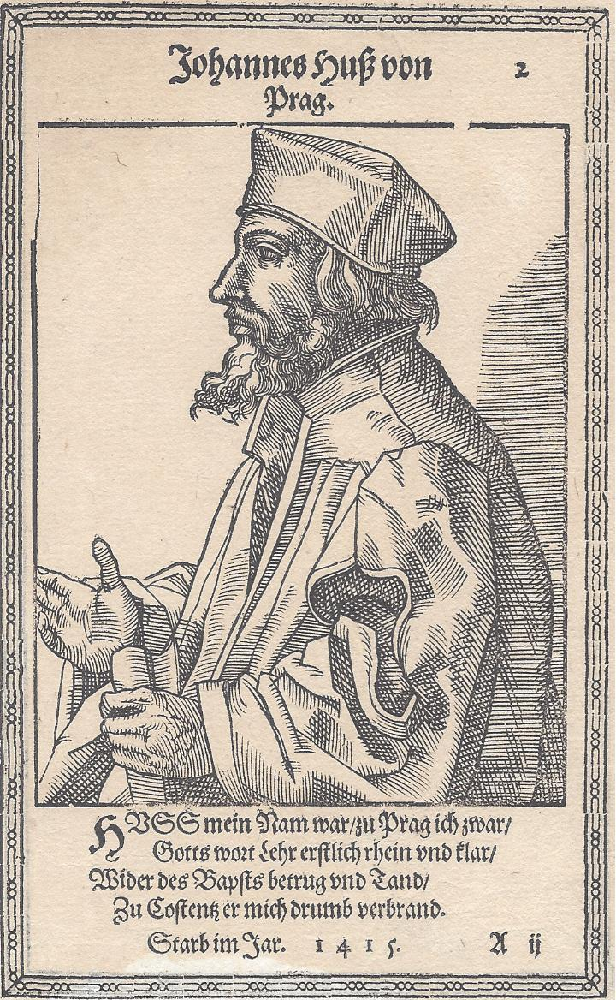
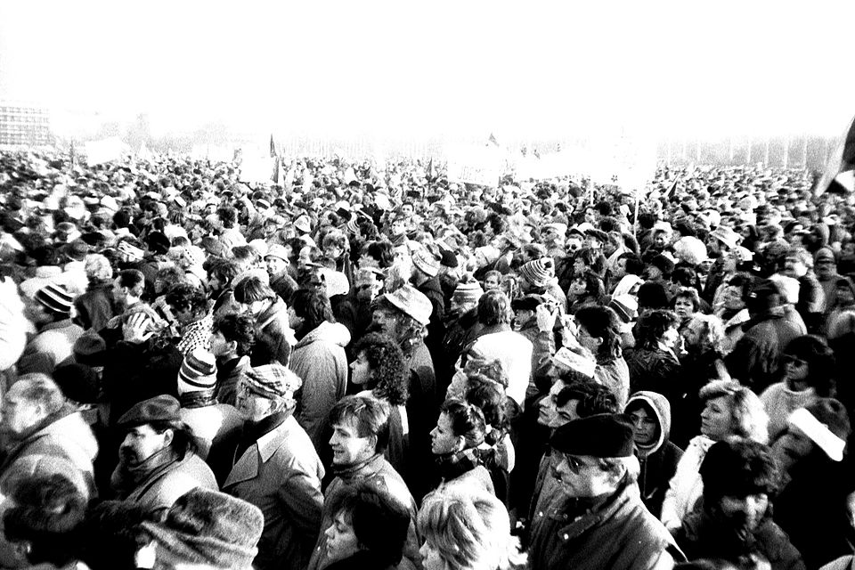

Faits marquants

Une féodale longue à trois picsPhase féodale de ~225 ans (1085-1311) avec trois pics successifs : Vratislav II premier roi (1085), Ottokar Ier et la Bulle d'Or de Sicile (1212), Ottokar II roi-hégémon centre-européen (1253-1278). Pacte oligarchique = Diplôme inaugural de Jean de Luxembourg (1311), « Magna Carta bohême » qui fonde le cadre pactiste pour 300 ans
Charles IV : acmé oligarchique le plus avancé du corpus européenLe règne de Charles IV (1346-1378) est le acmé oligarchique bohême — Université de Prague (1348), Corona regni Bohemiae (1348), Bulle d'Or impériale (1356), archevêché de Prague (1344). Passe tous les marqueurs observables d'absolutisation (rationalisation administrative, contrôle ecclésiastique, ouverture roturière) mais aucun des marqueurs forts canoniques (préséance de jure, perte d'autonomie fiscale, polarisation initiale à résoudre). Signature exacte d'un acmé oligarchique fort qui ne franchit pas le seuil absolutiste structurel

Une guerre sociale précoce et avortée — les hussitesLa guerre sociale bohême s'ouvre en 1419 (défenestration de Prague), 36 ans avant l'Angleterre et 143 ans avant la France — c'est la première guerre sociale moderne d'Europe occidentale. Pattern analogue aux guerres de religion françaises (mécanisme de distinction confessionnel, factions Taborites radicaux vs Utraquistes modérés). Avortée pactistement aux Compactata de Jihlava (1436), elle se rejoue 200 ans plus tard avec la seconde défenestration (1618-1620)

Absolutisation contrainte 1620-1749 et déblocage par Marie-ThérèseFerdinand II résout la guerre sociale en 1620 et inaugure formellement la phase absolutiste bohême (Verneuerte Landesordnung 1627), mais la construction de l'État central est bloquée par le cadre habsbourgeois composite : la chancellerie bohême est transférée à Vienne, la noblesse importée n'a pas de projet national, la diète conserve un veto fiscal. L'absolutisation reste contrainte pendant 129 ans, jusqu'aux réformes Haugwitz de Marie-Thérèse (1749) qui fusionnent les chancelleries Autriche-Bohême et libèrent la dynamique

Deux RN tchèques séparées par un AR exogène soviétiqueRN 1 (1918-1948) inaugurée par l'effondrement habsbourgeois, expérience parlementaire stable de 20 ans (Masaryk-Beneš), interrompue par Munich (1938) et le Protectorat. La Glorieuse Révolution est tentée en 1948 mais avortée par le Coup de Prague communiste. AR exogène soviétique de 41 ans (1948-1989) avec Printemps de Prague 1968 comme réplique de RN avortée. RN 2 brève (1989-1993) avec la Révolution de velours et la séparation tchéco-slovaque comme GR